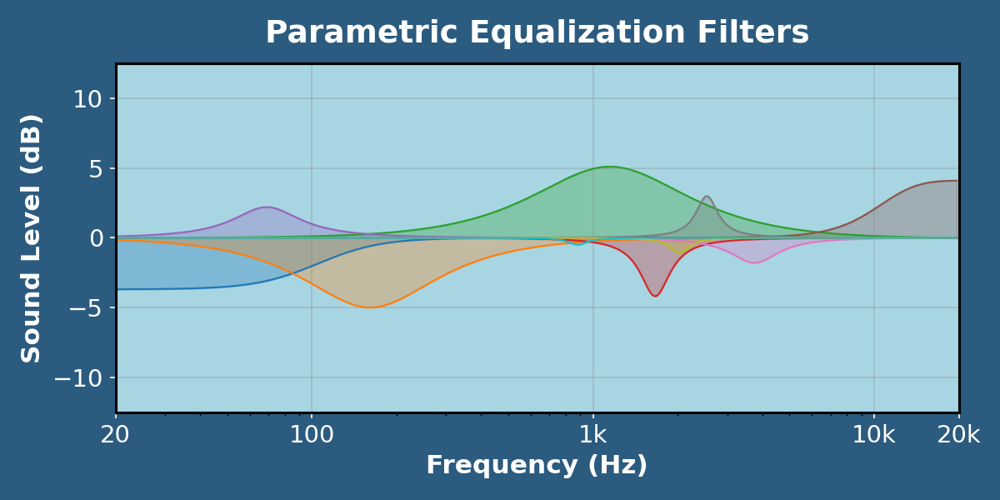
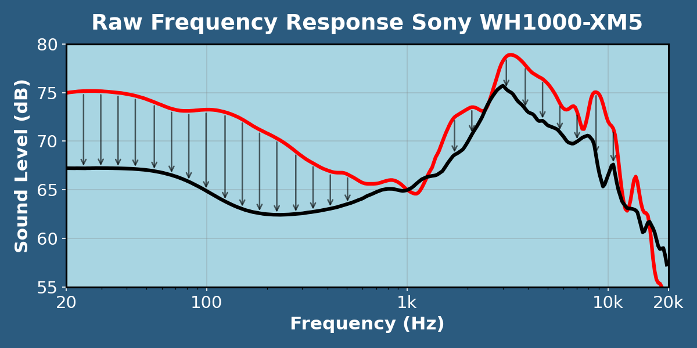

Sound from headphones is not always the same! Each headphone produces different frequencies (pitches) at different volumes (sound level). This change in volume over frequency is called the frequency response, and colors the sound signature of the headphone.

